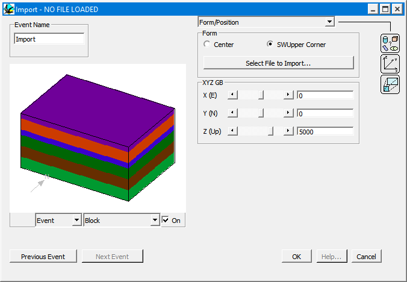

Import block
In order to Import an existing block model as an event, place an Import icon  in the History window. You will then be provided with an file open window, to select the block file (which must have a suffix of .g00). Once the file has been read in, a second window opens that allows you to alter the offset, the scale and other import parameters.
in the History window. You will then be provided with an file open window, to select the block file (which must have a suffix of .g00). Once the file has been read in, a second window opens that allows you to alter the offset, the scale and other import parameters.

A block model is a model of a three dimensional structure described as a regular voxel model, that is, it is broken up into a equal sized cubes. The format of the block model must be a standard indexed Noddy block model file set, with suffix .g00, however various formats may be converted into the Noddy block format, such as raw voxel models, old Noddy block model formats, and Vulcan regularised block models, via the Tools menu.
The geology in the rectangular volume defined by the block model is replaced by the content of the block model, with one exception, if the index for a particular voxel is zero or the transparency value defined in the import window. In this case the pre-existing geology remains. Using the Transparent Layers option, multiple unconnected objects may be imported at one time, and objects may be hollow, or in fact have any complex structure desired.
Internal boundaries defined by imported block models are not yet seen by the triangulation calculation (3D Layer view).
History files save the associated block model by absolute path name, so if a history file and its block model are move to a new files sytem, the block model may need to be re-imported.
| GROUP | NAME | FUNCTION |
|---|---|---|
| Form | Centre | Position parameters refer to centre of rectangular block |
| SWUpper Corner | Position parameters refer to South West Upper corner of rectangular block | |
| Select File to Import | Allows new block model file to be imported | |
| Position | X | X position of either centre or corner of block (see above) |
| Y | Y position of either centre or corner of block (see above) | |
| Z | Z position of either centre or corner of block (see above) | |
| Scale | Block Size | Size of cubes |
| Rock Properties | Rock Properties | Edit individual geophysical rock properties of imported block |
| Transparent Layer 0+ | All blocks with an index of 0 or this value will be ignored, and the underlying geology will "show through" |
Noddy · open source under the MIT licence · Loop3D/noddy_qt